Bark-B-Q has a seaside Christmas lunch planned down to the minute. By the time everyone arrives, the shade has slipped away and the benches don’t work for everyone. A folding table might save lunch, if the host can give his friends enough room to help.
33 printed pages · 9.1 MB · A4 or US Letter. Download PDF · Open PDF to printOpens in a new tab. Use the PDF viewer's Print control.
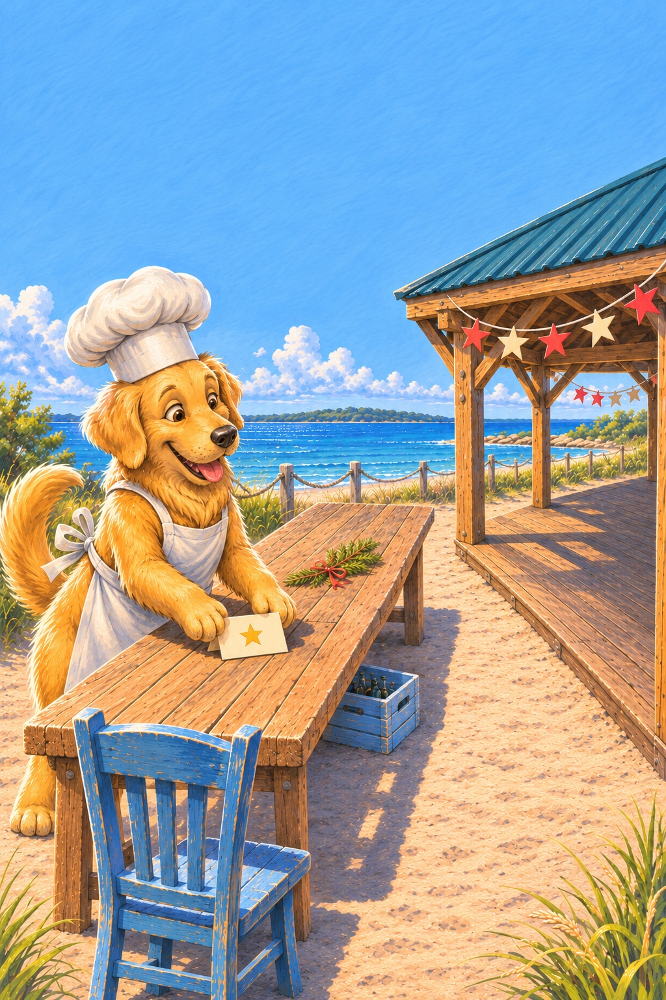
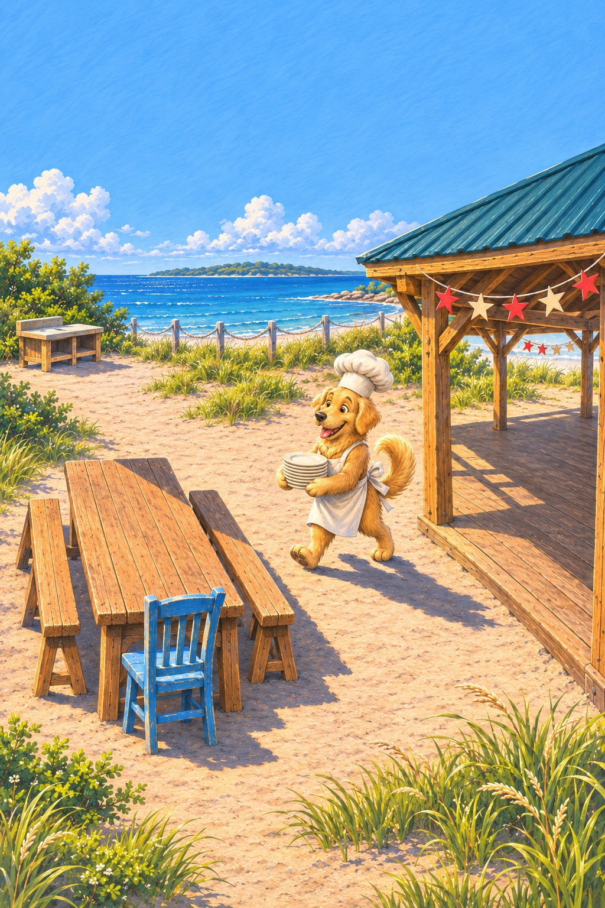
Page 1 of 32
On Christmas morning, Bark-B-Q could see the sea between the posts of the picnic shelter. Sunlight danced on the bay, and a breeze stirred the paper stars he had hung along the shelter roof.
He carried a stack of plates down the sandy path to the long wooden table. A stripe of shade lay right across it. He could already picture everyone sitting there.
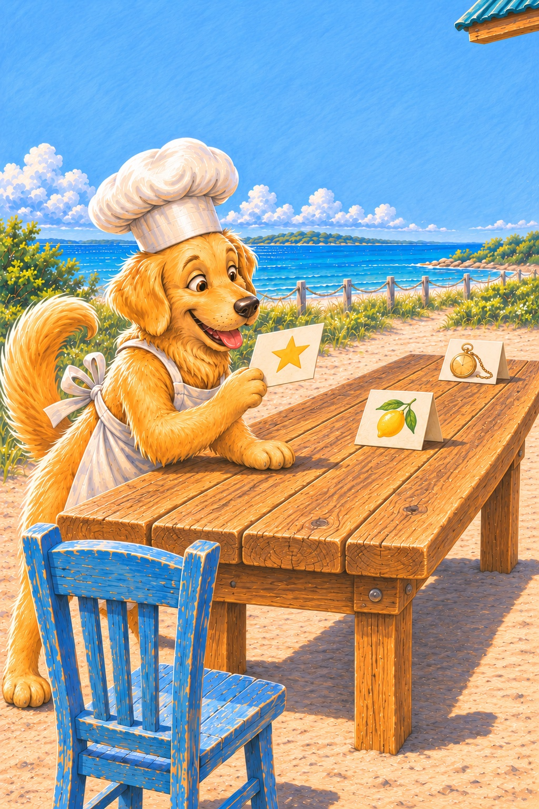
Page 2 of 32
Bark-B-Q had made seven place cards. He had drawn a lemon for Leo-Lemonade and a tiny watch for Cluck O’Clock. His own card had a little star.
It went at the head of the table, in front of his blue chair. From there he could see every plate. If somebody needed more bread, he could be up in a second.
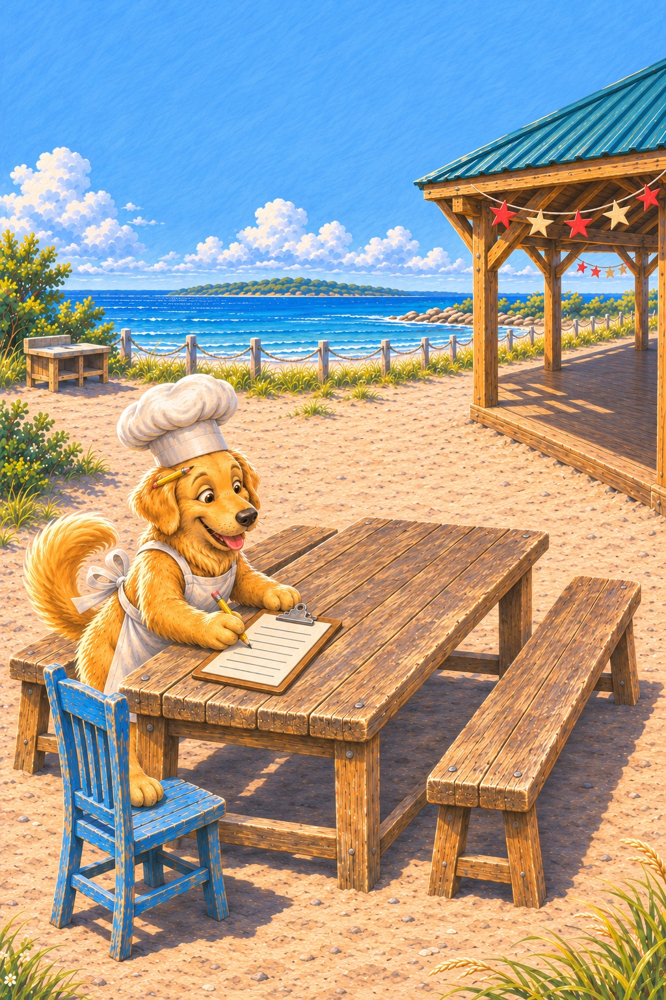
Page 3 of 32
He clipped a timetable to his board. Drinks at eleven fifty-five. Lunch at twelve. Something sweet at twelve thirty.
Then he tucked a pencil behind his ear and walked all the way round the table. Two long benches, one blue chair and seven places. He tapped the back of his chair.
“I’ll see you at twelve,” he told it.
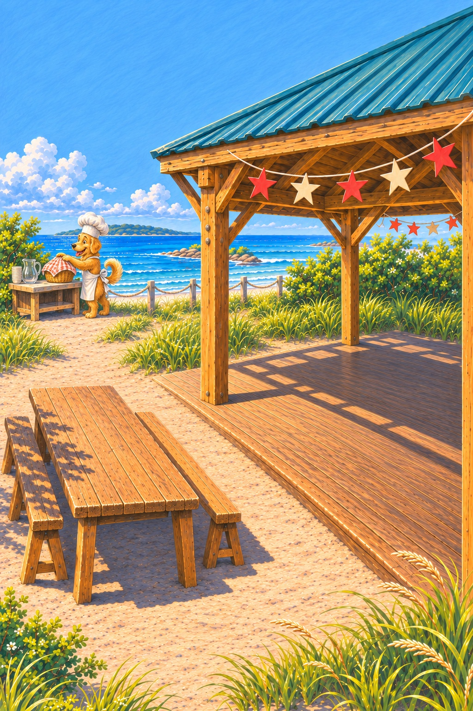
Page 4 of 32
At the cooking station, away from the path and the tables, Bark-B-Q checked his lunch supplies. He covered the bread, then set out an empty jug and seven cups.
When he came back, the shade had slipped from the plates to one of the benches. He slid his card a little towards it.
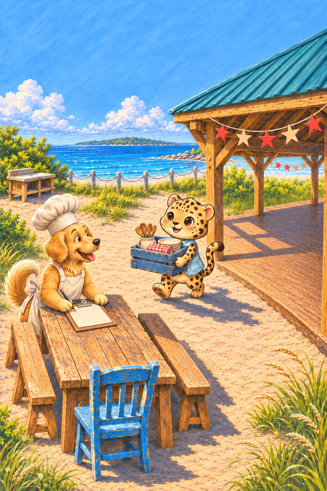
Page 5 of 32
Leo-Lemonade came up the path carrying a blue crate. Something clinked inside.
“My family puts lemon peel in the jug first,” he said. “Then the ice. If you put the ice in first, it’s very hard to give the lemon peel a proper stir.”
Bark-B-Q checked the timetable. Leo was seven minutes early.
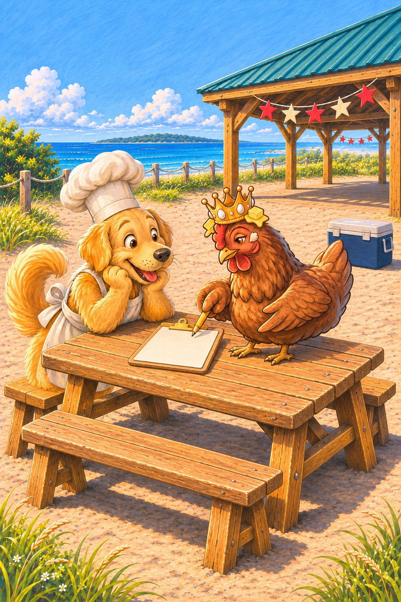
Page 6 of 32
Eggs-Benedict looked over his shoulder. She wore her gold crown, as usual. Today she had tucked a pencil beside one of its butter-yellow points.
“The drinks can wait in the cooler,” she said. “Shall I write that down?”
“There’s room right here,” Bark-B-Q said, and found a space between two very straight lines.
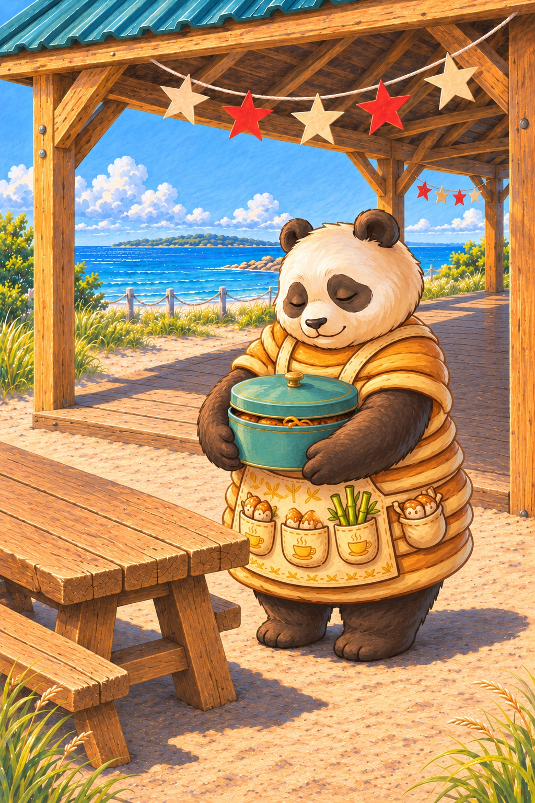
Page 7 of 32
Panda-Cake arrived with a round tin hugged against her chest. Through the gap under the lid came the smell of orange.
“My aunt taught me to put little bits of candied peel on top,” she said. “One piece per slice. The first time I made it, I missed a slice and had to eat it myself.”
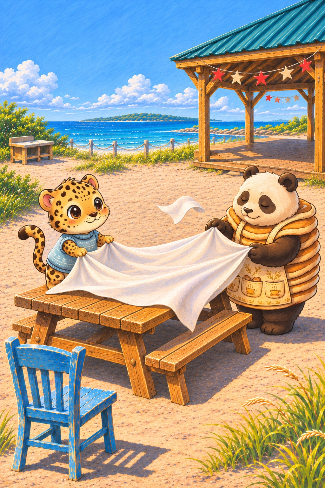
Page 8 of 32
Bark-B-Q weighted the cloth with a stack of plates. He had just smoothed the other end when a warm gust set a napkin flapping against his paw.
Leo held down the bread basket. Panda caught the corner of the cloth.
“Thank you,” said Bark-B-Q. “A bit of breeze is nice.”
His blue chair was now in full sun.
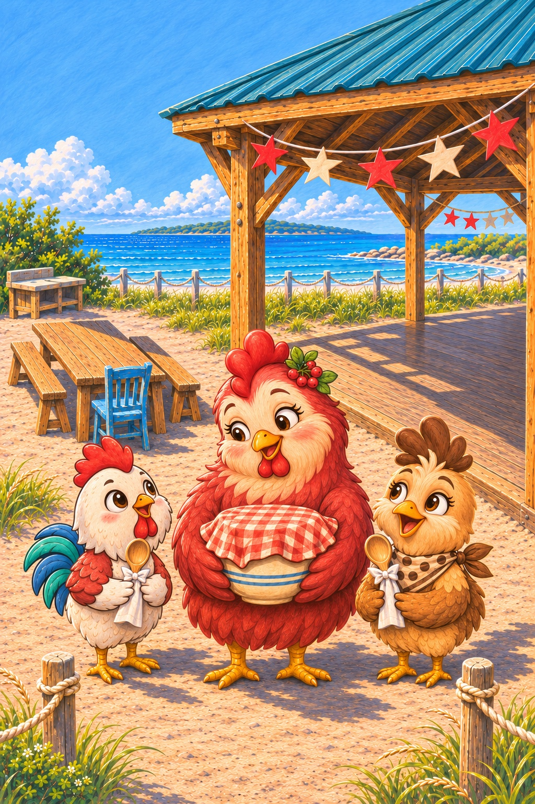
Page 9 of 32
Hen-Berry came through the gate with a dish covered by a red checked cloth. Cluck O’Clock and Coop-Accino each carried a small spoon in a clean teatowel.
“Cucumber salad,” said Coop, “with mint from our pot.”
“Use both spoons,” said Cluck. “I tried using one and a slice of cucumber landed on my foot.”
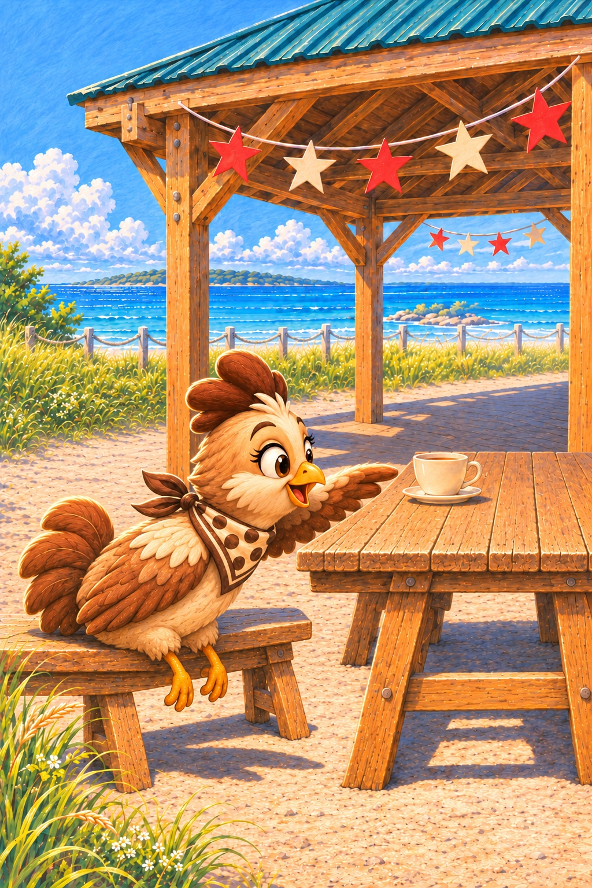
Page 10 of 32
Coop tried a place on the bench. To reach her cup she had to lean forward until her feet lifted off the ground. When she sat back again, the cup was just where she had left it.
“I could move the cup,” she said. “But then I’d still have to reach the salad.”
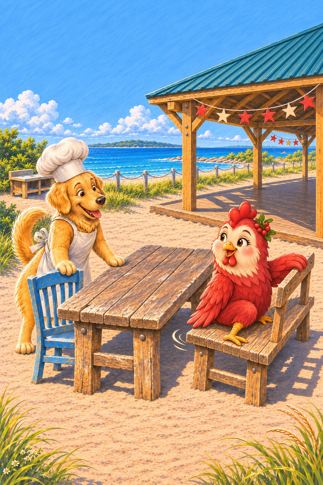
Page 11 of 32
Hen-Berry tried the other bench. The rail underneath left very little room to turn her feet.
“I’d do better with a chair I can pull out,” she said. “Is there one spare?”
Bark-B-Q looked at his blue chair. He could give her that one and stand by the bread basket. He was already reaching for it when Cluck spoke.
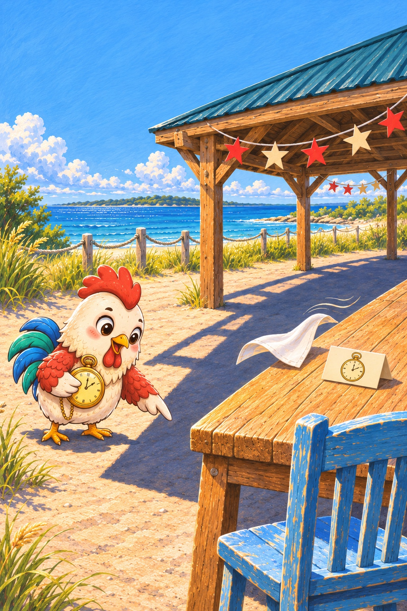
Page 12 of 32
“Look at the shade,” said Cluck.
The shade that had stretched across the table that morning was now a dark wedge on the ground beside it. Cluck’s card, with its little watch, lay in the middle of the hot tabletop.
A warm gust ruffled the feathers behind his comb. The napkin flapped over the edge of the table. This time nobody had a free hand to catch it.
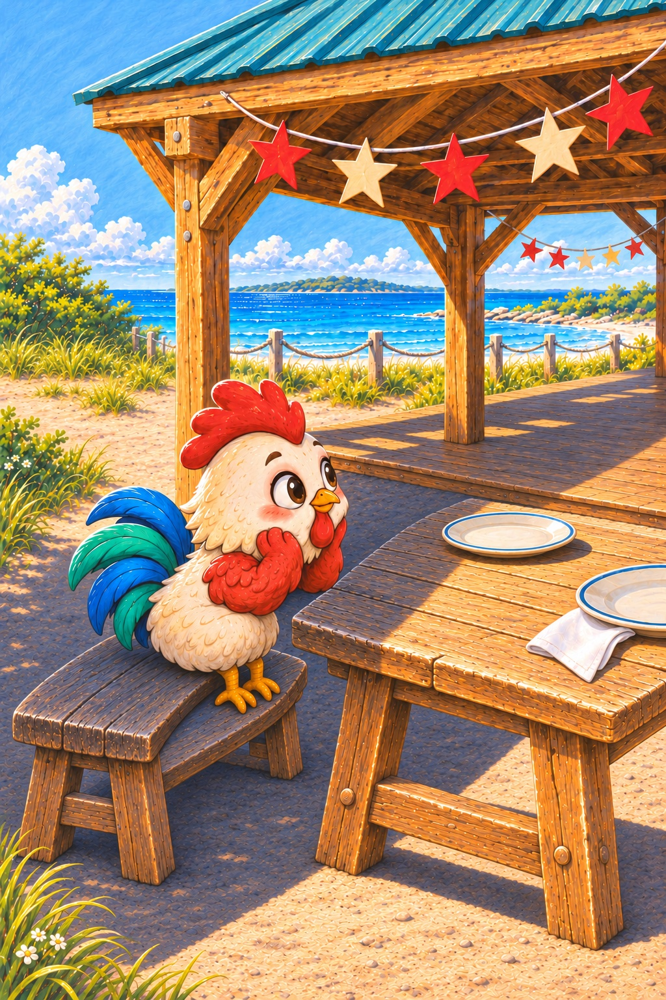
Page 13 of 32
Bark-B-Q tucked the napkin under a plate. If he could move a bench closer to the shade, some of the trouble might go away.
He and Leo lifted one end and shuffled it sideways. They lowered the bench and stood back.
Cluck sat down. His feet were cool, but his plate was still in the sun. He tried to reach it without getting up.
“I think we’ve invented a bench for feet,” he said.
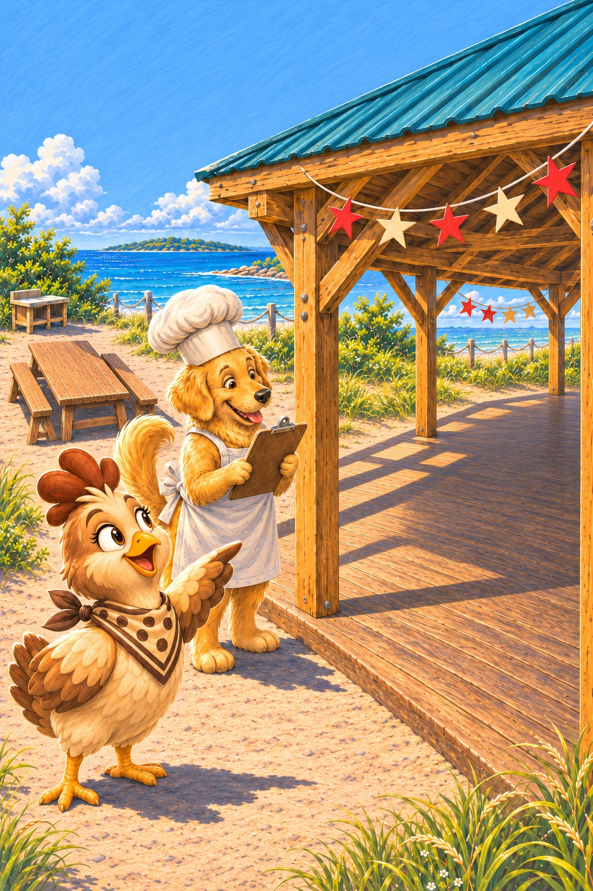
Page 14 of 32
“Can we move the table as well?” Coop asked.
Bark-B-Q tried to picture it between the shelter posts. The long table had wide legs and a wobbly foot. Turning it through the narrow opening would take everyone.
He looked back at the timetable. Drinks should have started by now. He could hear ice ticking softly against the side of the cooler.
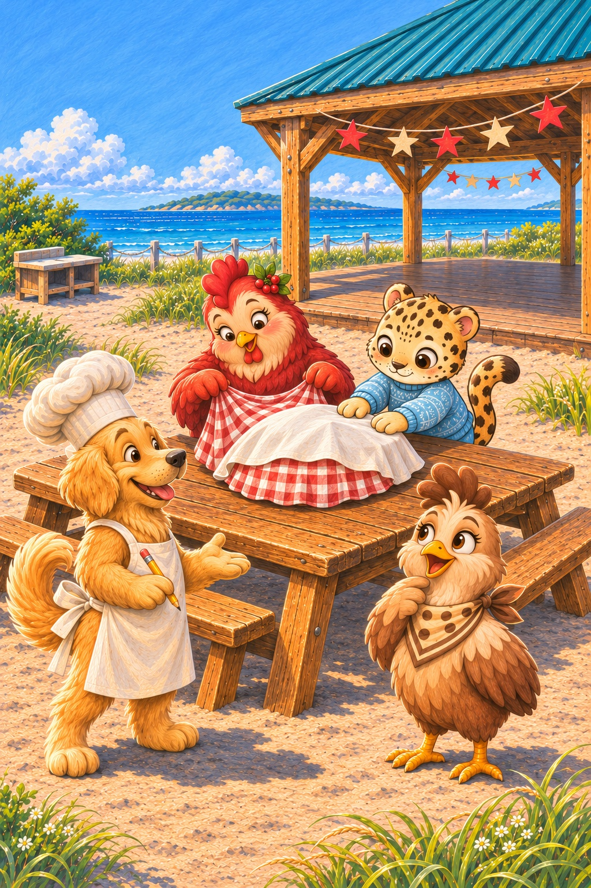
Page 15 of 32
“I thought I could fix it before anyone noticed,” Bark-B-Q said.
Coop was still trying to reach her cup. Hen-Berry had found a patch of shade for the salad. Leo was holding the cloth down with both paws.
Bark-B-Q took the pencil from behind his ear.
“What would make lunch work for you?”
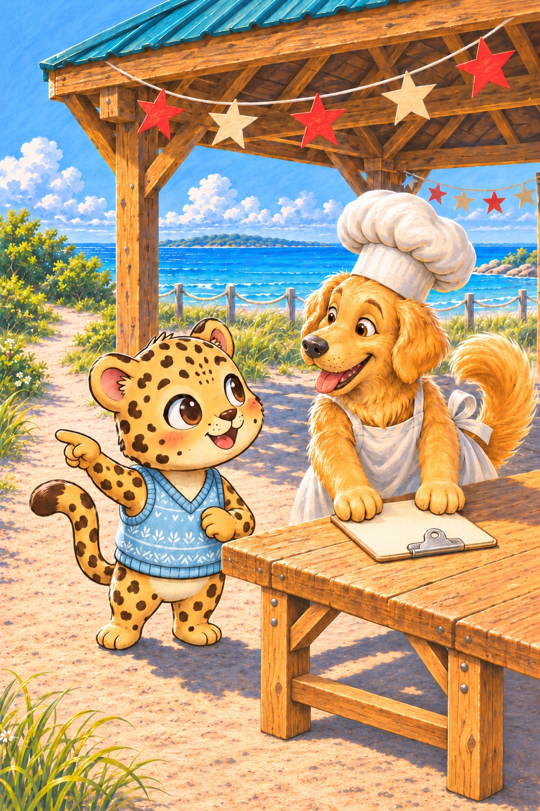
Page 16 of 32
“A chair I can pull out,” said Hen-Berry.
“A table where I can reach things,” said Coop.
“A place to put the cold jug,” said Leo. “I’ve got a folding table in my camp trailer. It’s a little shorter than this one. Want to see if it fits?”
Bark-B-Q put his timetable down. “Yes, please.”
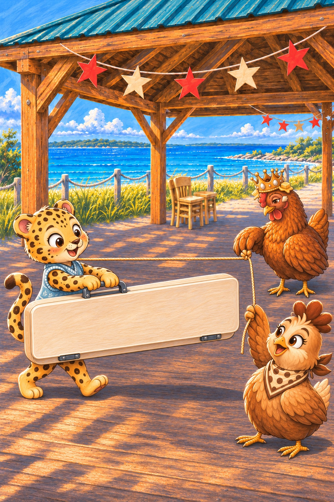
Page 17 of 32
Leo came back carrying the table by its handle, with the legs folded flat beneath it. Eggs-Benedict stretched a piece of spare cord between the shelter posts. Coop held one end while Eggs pinched the cord at the other post.
They held the cord against the long edge of the table. The cord was a good wingtip longer. The table would fit.
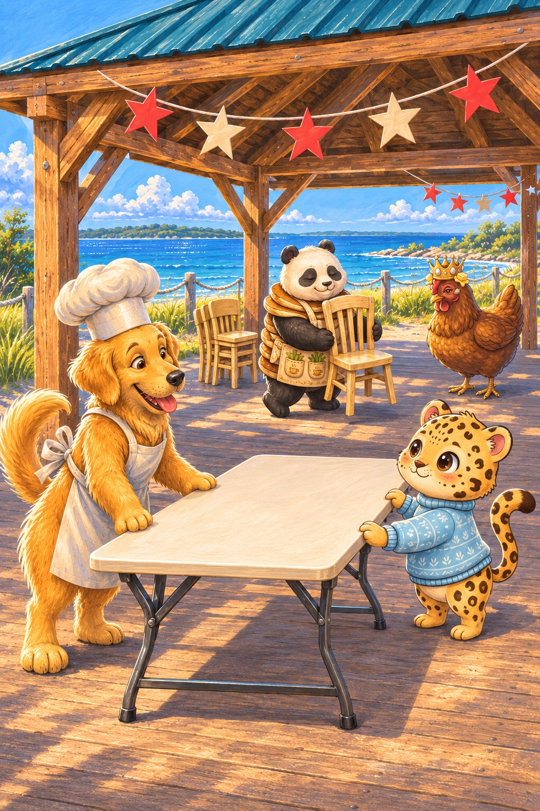
Page 18 of 32
The table cleared the posts. Leo and Bark-B-Q unfolded the legs and set it down in the shade. It stood steady on the shelter floor with room to walk all the way round.
“Smaller table,” said Eggs-Benedict. “Same number of friends.”
Panda brought up the little chairs that had been stacked at the back of the shelter.
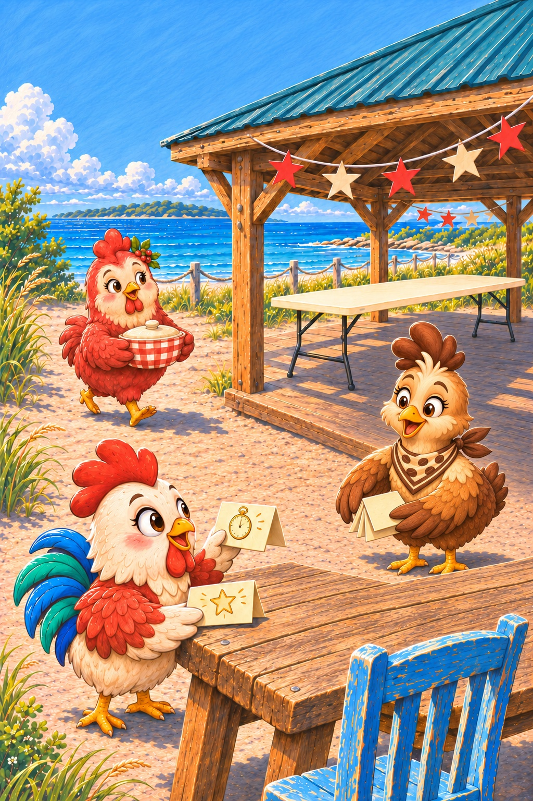
Page 19 of 32
Bark-B-Q started to gather up the place cards, then put them down again. “Could someone bring these in? I’ll check the food.”
“We’ve got them,” said Hen-Berry. She lifted the salad dish while Cluck and Coop collected the cards.
Cluck held the two cards marked with a watch and a star together like a pair of tickets.
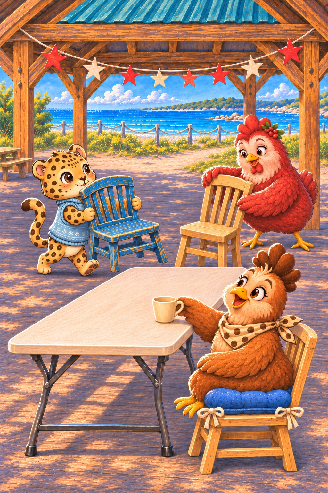
Page 20 of 32
This time Coop chose a low chair with a firm cushion and put her cup where she could reach it. Hen-Berry pulled out a chair with no rail in her way. Leo brought over Bark-B-Q’s blue chair and kept the passage clear.
Bark-B-Q caught himself straightening three plates in a row. Then he passed the rest to Hen-Berry.
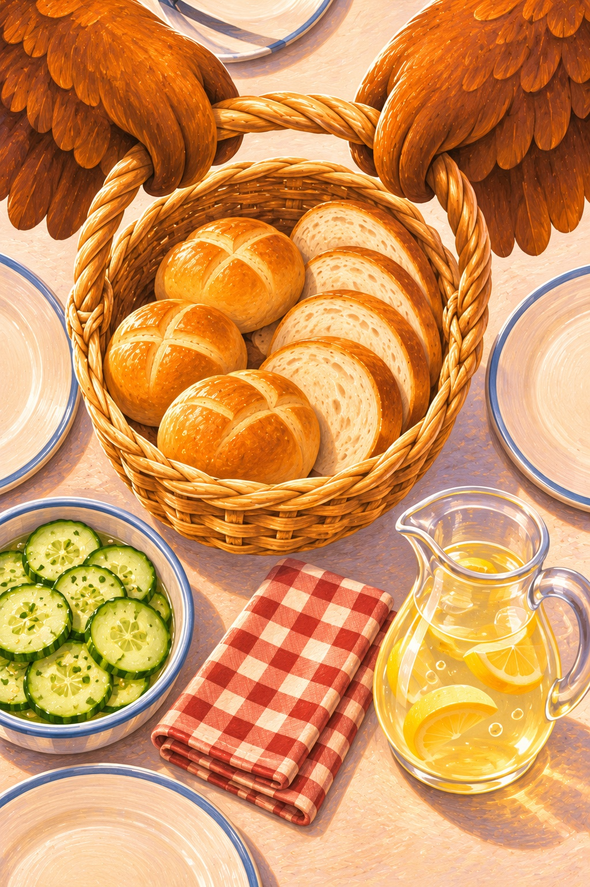
Page 21 of 32
Eggs-Benedict tried putting the bread basket, salad dish and jug between the plates. There was barely room for a spoon. She took the basket off again.
“How about we have it in rounds?” Panda asked. “We can leave my tin closed until later.”
“Salad and bread first,” said Hen-Berry. “Then we can make room for whatever’s next.”
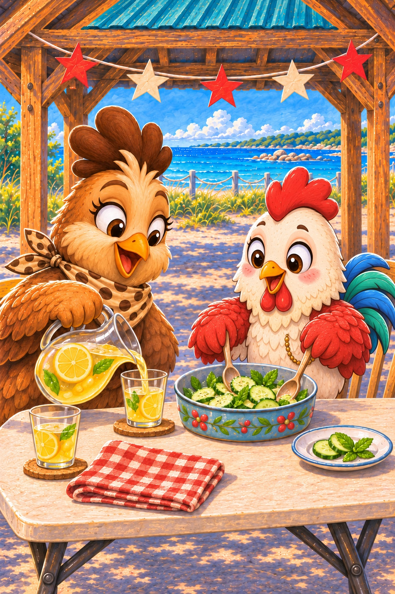
Page 22 of 32
Everybody had a turn with the bread basket. Coop swung the little salad dish round so Cluck could use both spoons. The mint had made tiny green marks on the underside of the red checked cloth.
Leo put the jug where Coop could reach the handle. She poured a little lemonade and watched a twist of peel turn over in her cup.
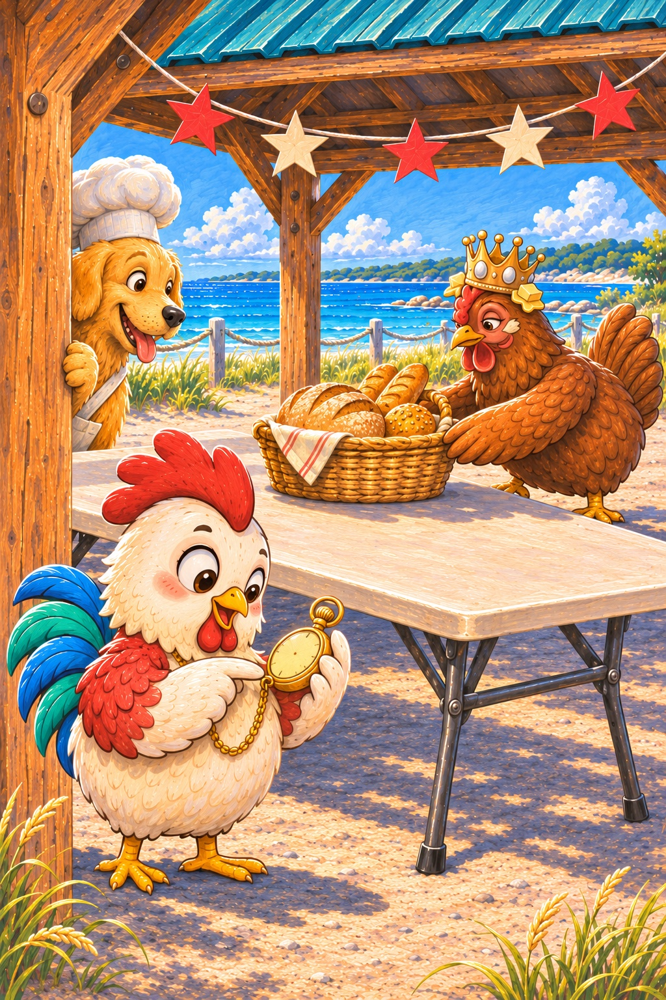
Page 23 of 32
Bark-B-Q stuck his head round the shelter post. He had been keeping an eye on the food at the cooking station.
“Is it twelve yet?”
“According to this,” said Eggs-Benedict, tapping the timetable, “we’re late for drinks and early for cake.”
Cluck opened his pocket watch. “It’s exactly time for another piece of bread.”
Eggs pushed the basket towards him.
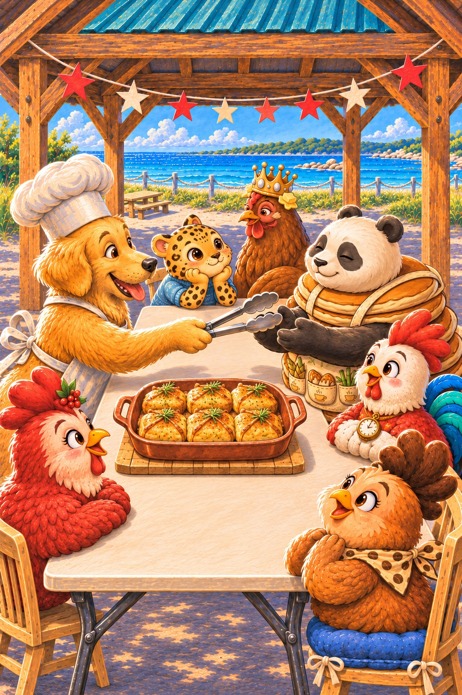
Page 24 of 32
Bark-B-Q brought the warm tray over and set it down on the wooden mat Hen-Berry had brought from the old table. He returned to the cooking station to turn everything off, then carried back the serving tongs.
Panda made room for the tray. “Could you pass that round?” Bark-B-Q asked.
She held up the tongs. “I was hoping you’d ask.”
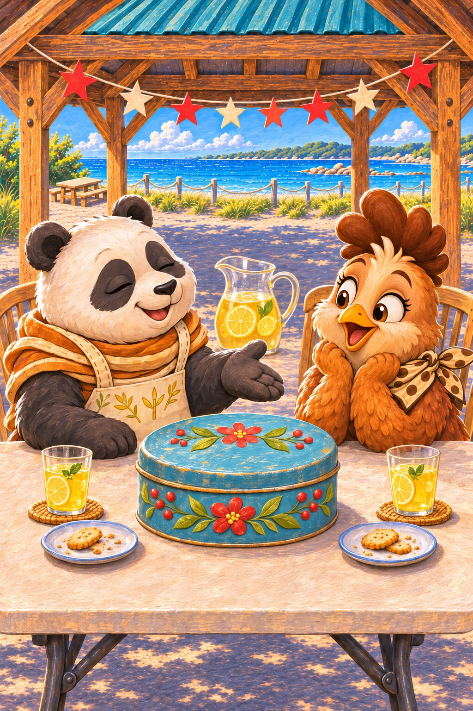
Page 25 of 32
Panda told Coop about the year her aunt had set the orange cake on a stool to cool. Everyone had walked past it and said how lovely it smelled. By the time they were ready to cut it, her aunt had forgotten where she’d put it.
“What happened?” Coop asked.
“They found it when someone needed a seat.”
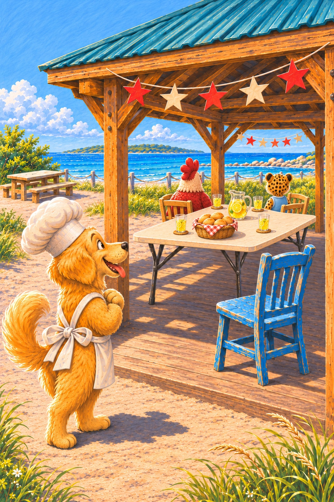
Page 26 of 32
Bark-B-Q laughed. Then he looked down and found he was still standing on the outside of the shelter, peering over everyone’s shoulders.
He could smell the mint and see the bread basket. He’d been looking after lunch for so long that he hadn’t had a bite.
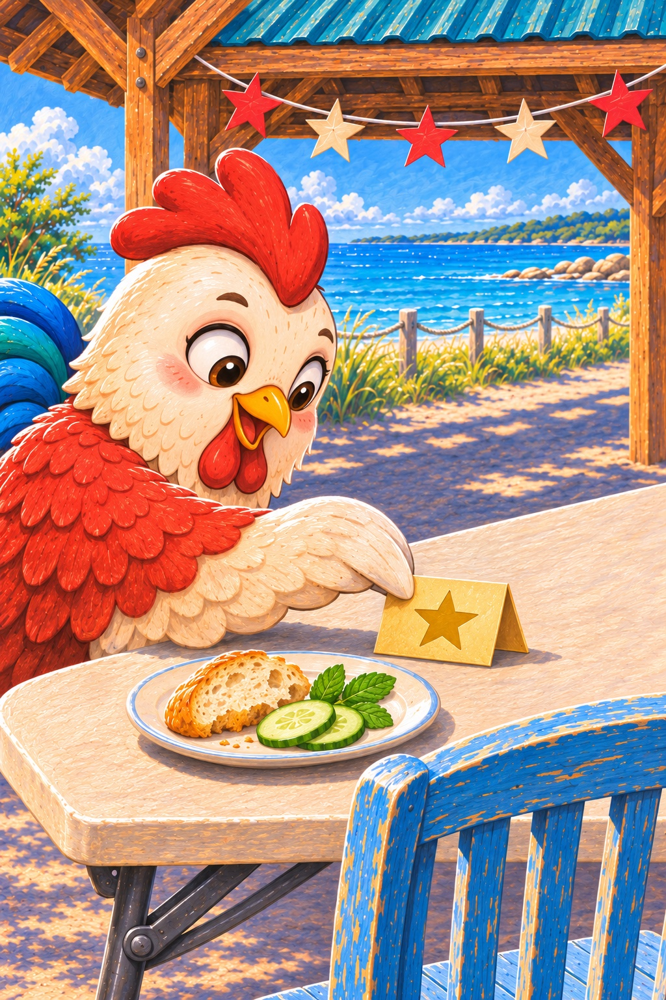
Page 27 of 32
Cluck took the card with the star from beside his own.
“I kept this for you,” he said.
He put it down beside Bark-B-Q’s plate. There was a piece of bread on it, with a little pile of cucumber salad and the biggest mint leaf Cluck had found.
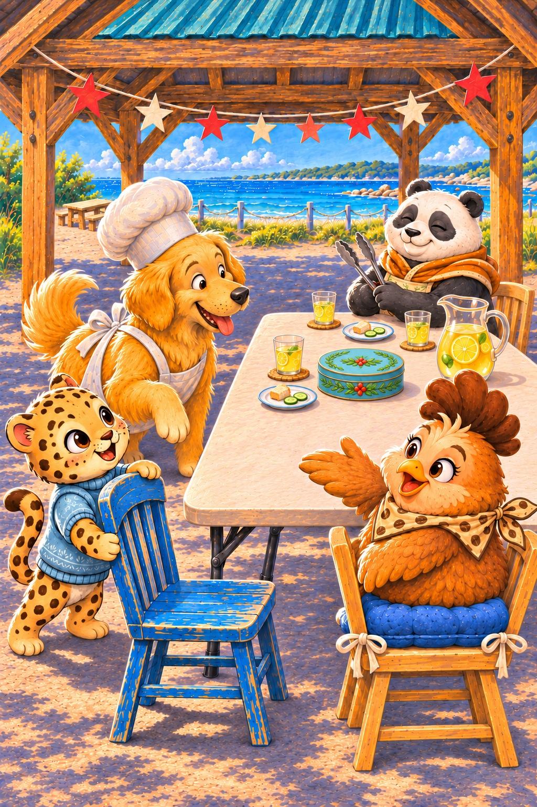
Page 28 of 32
Hen-Berry moved the jug. Leo pulled out the blue chair.
Bark-B-Q reached for the tongs, out of habit. Panda already had them. He looked for the timetable. There it was, lying face down on the end of the table.
“Do you need anything?” he asked.
“Yes,” said Coop. “Can you sit a bit closer? I’ve got something to tell you.”
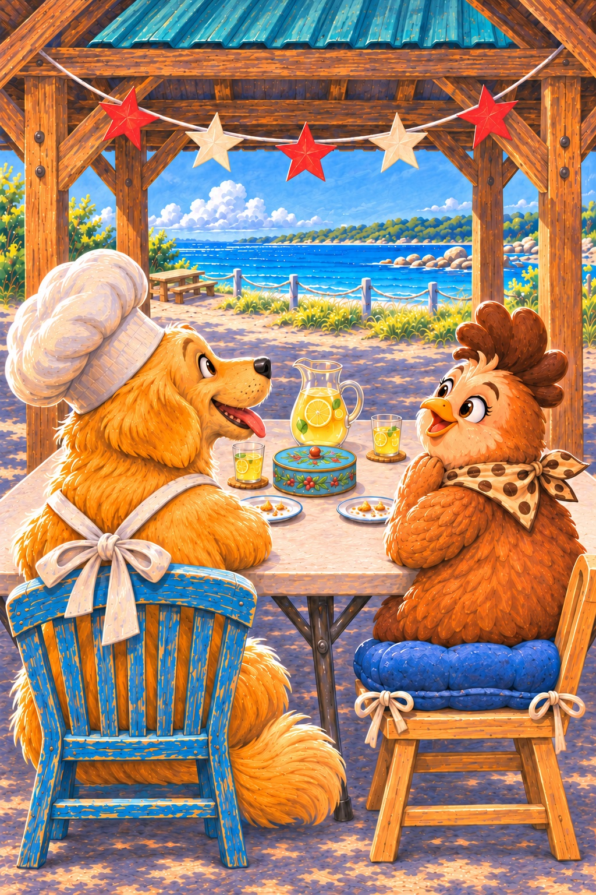
Page 29 of 32
Bark-B-Q sat. The chair creaked in the same familiar way it did in his kitchen. He tucked his feet under the table.
Coop told him she could see the sea from her chair. When he leaned a little towards her, he could see it too. A bright strip of water showed between the posts, just below the paper stars.
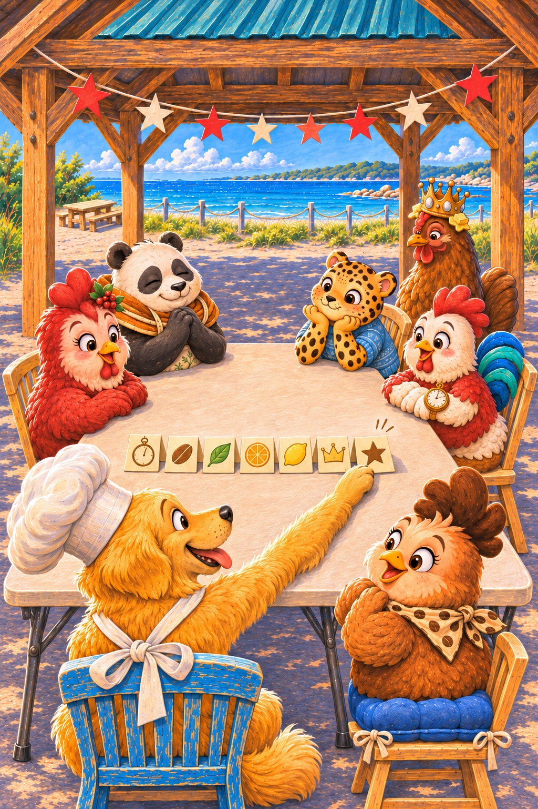
Page 30 of 32
Cluck nudged his place card towards the middle of the table. “My card’s been waiting all morning. I think it would like a seat for the cake.”
Coop sent hers after it. Hen-Berry made room by moving the empty basket. One by one the other cards joined them. Bark-B-Q turned his own around so the star faced his friends, then slid it into the little row.
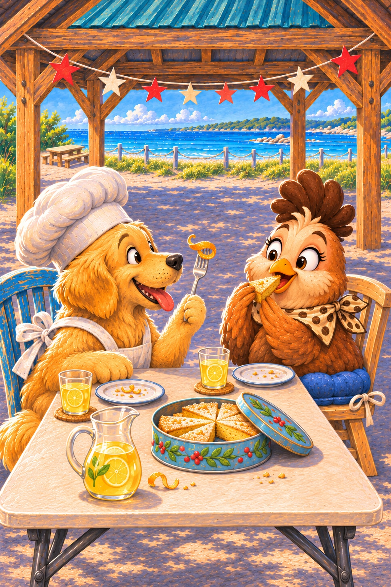
Page 31 of 32
Panda opened the tin. Everyone looked for the candied peel on their slice. Bark-B-Q found his beneath a crumb and balanced it on the end of a fork.
“I did have a time for cake,” he said.
Coop took a bite. “You picked a good one.”
She was already looking to see if anyone had left a piece of peel on their plate.
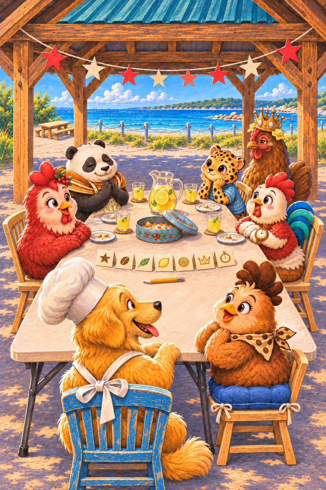
Page 32 of 32
The paper stars lifted in the breeze. Through the shelter posts Bark-B-Q could see the old table, its bare boards bright in the sun.
“Shall we stay a bit longer?” asked Leo.
Bark-B-Q took his pencil from beside the timetable and set it down next to the little row of cards. Then he asked Coop what else she could see from where she sat.
The end · Thank you for reading
Share another story
A SnackPack original story, free to read online or print.